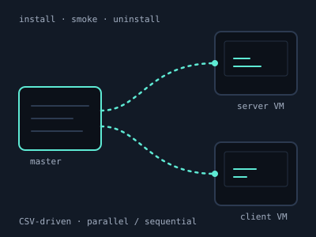

Auto-Client Update Automation
An automated way to check that installing, updating and uninstalling a large engineering software product keeps working, release after release.

The problem
Every new release or service pack of the Capital software has to be installable on top of an existing installation without breaking applications, licenses or configuration. The product's built-in client update mechanism pushes these updates to client machines, so it has to be verified before each release.
Doing that by hand means installing, updating, running smoke tests and uninstalling on several machines. It is slow, repetitive and easy to get wrong.
What it does
The platform runs the whole cycle on demand and reports the result: install, installation smoke test, application smoke test, uninstall. It runs across a Windows server and a Windows client virtual machine, so regressions show up early instead of after a customer finds them.
How it's built
- Web wrapper. A FastAPI app lets a user submit a run, upload a setup file, watch a job queue and download logs and artefacts. A single background worker runs queued jobs, and job state is rebuilt from disk after a restart, so no database is needed.
- Orchestrator. A command-line driver, run once per test suite, deploys the automation to each machine, builds the list of phases, runs them in order and writes a report. If a phase fails, it stops, runs a cleanup uninstall, collects logs from every machine and exits with a distinct code for pass, fail or pass with warnings.
- Ansible bridge. The Linux controller talks to the Windows machines through Ansible playbooks over WinRM. UI tests need an interactive desktop, so each test run is launched as a Windows scheduled task rather than a plain remote command.
- Machine-side framework. Tests are written as readable CSV files. Each row names a Python function and its arguments. A row can be expected to fail, which makes negative tests simple, and one CSV can call another so common steps are written once.
Two execution flows
- General flow. A fixed sequence: install on both machines in parallel, then the installation and application smoke tests one machine at a time, then uninstall in parallel.
- Release-candidate flow. Install, then smoke-test pairs that are discovered automatically by matching numbers in the server and client test file names, then uninstall.
Reporting
Every step records a pass or fail as it runs. The framework treats a clean return, True, zero or words like "OK" as a pass, and applies the opposite rule to steps marked as expected failures. Steps that succeed but raise a warning, for example a background process still shutting down, don't stop the suite. They mark it as "passed with warnings" so someone can review them.
Each suite produces a JSON report with the overall status, timings and per-phase results, plus the collected logs.
Design notes
- Credentials are kept out of the codebase, in the inventory and variable files.
- The in-memory job registry suits a single worker. It would need locking before scaling to several.
- Long-running tasks have a roughly two-hour wait budget, with no signal yet to tell a slow task from a stalled one.
This is a high-level write-up of internal work. The code isn't public, and names, hosts and paths are left out on purpose.